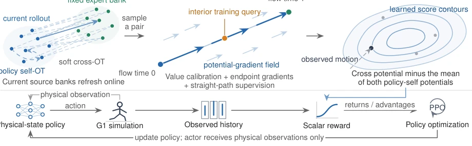
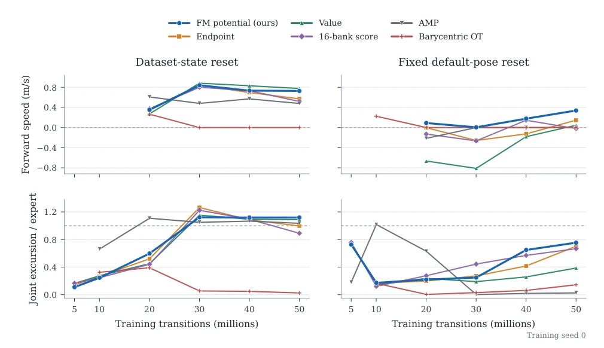
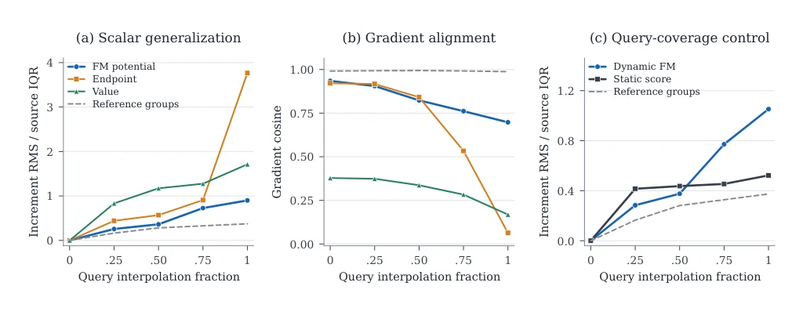

This paper adds a new twist to "reward design" in imitation learning. AMP [1] is well-known, but when the expert policy and current policy are too far apart, the discriminator goes blind, and Jensen-Shannon divergence fails. The authors did not create a new discriminator, but used Optimal Transport (OT) to connect the current rollout and expert library, employing Flow Matching to learn scalar rewards. This approach is quite clever, avoiding the "motion attenuation" problem caused by directly averaging expert actions, preserving joint motion signals. However, do not get too excited, this thing still runs in simulation, the Unitree G1's legs have not yet truly taken two steps, the sim-to-real gap still exists. Moreover, online fitting of the reward model definitely has higher computational overhead than AMP; although the paper claims 29% offline time savings, what about the extra overhead during online training? Overall, it's a solid improvement, but far from "general", after all only one walking action was tested, robustness unverified across multiple tasks.
The core challenge in imitation learning lies in how to design reward functions to let policies gradually approach expert behavior from random initial states. Existing Adversarial Motion Priors (AMP) [1] rely on discriminators, but when the policy distribution and expert distribution differ significantly, the signal provided by Jensen-Shannon divergence becomes vague or even disappears [2]. Although Optimal Transport (OT) can provide a more geometric distance metric [3][4], direct application has serious flaws: simple barycentric targets average expert successor actions across different gait phases, causing joint motion signals to be weakened or even losing key dynamic features. The authors point out that this averaging still occurs even when expert samples themselves have strong motion, making the reward unable to effectively guide the policy to learn real gaits. Therefore, a reward mechanism is needed that can maintain OT's geometric advantages, avoid motion attenuation caused by averaging, and adapt online to policy changes.
The overall process is "online fitting of the reward model". First, sample feature library B from the current policy rollout, perform entropy-regularized Optimal Transport (OT) with the fixed expert library E, obtaining coupling paths. Next, utilize Flow Matching (FM) technology to train a neural scalar potential function along these interpolation paths from rollout to expert. The model contains three loss terms: 1) Value Calibration, calibrating the relative magnitude of scalar values, solving the problem where gradient matching cannot determine values in sparse regions; 2) Endpoint Supervision, explicitly fitting the gradient of reward scores at flow time zero, ensuring the reward function is consistent with geometric supervision; 3) Interior Path Supervision, regressing the velocity field on the path, using pair displacements as cheap labels. Finally, stabilize model parameters via Exponential Moving Average (EMA), and normalize the fitted scalar potential as PPO reward input. The Actor receives only physical observations, not contacting latent targets. This method converts path supervision into stable PPO rewards, avoiding direct exposure of target states, achieving decoupling of physical observations and rewards.

Fig. 1. FMP transports current rollout histories toward demonstrations and fits a shared scalar potential on the resulting paths. The actor receives only physical observations and the fitted scalar reward.
Experiments were conducted in the Unitree G1 simulator, using LaFAN1 walking demonstrations, with a training budget of 50 million steps. Compared AMP [1], Barycentric OT, and ablation variants with different loss combinations. Under "Fixed Pose Initialization" (far from expert distribution) conditions, FMP performed best with a speed of 0.338 m/s and 129 falls, significantly better than Endpoint-only's 0.147 m/s and 243 falls. Under "Dataset Reset", FMP also reached 0.727 m/s. Reward generalization tests showed that FMP has higher correlation on historical trajectories outside the rollout. Static supervision (Static FM) is more accurate near expert endpoints, but Dynamic FM has lower error in intermediate interpolation regions and saves 29% offline fitting time. This proves the effectiveness of path supervision, but also exposes the problem of barycentric averaging causing motion signal loss.

Fig. 2. Motion acquisition across training budgets under dataset and fixed-pose initialization. Late speed and expert-relative joint excursion distinguish walking from stationary survival.

Fig. 3. Reward geometry on common rollout-to-expert interpolation queries. In (c), dynamic FM has lower increment error at fractions 0.25 and 0.50, whereas static supervision has lower error at 0.75 and 1.00.